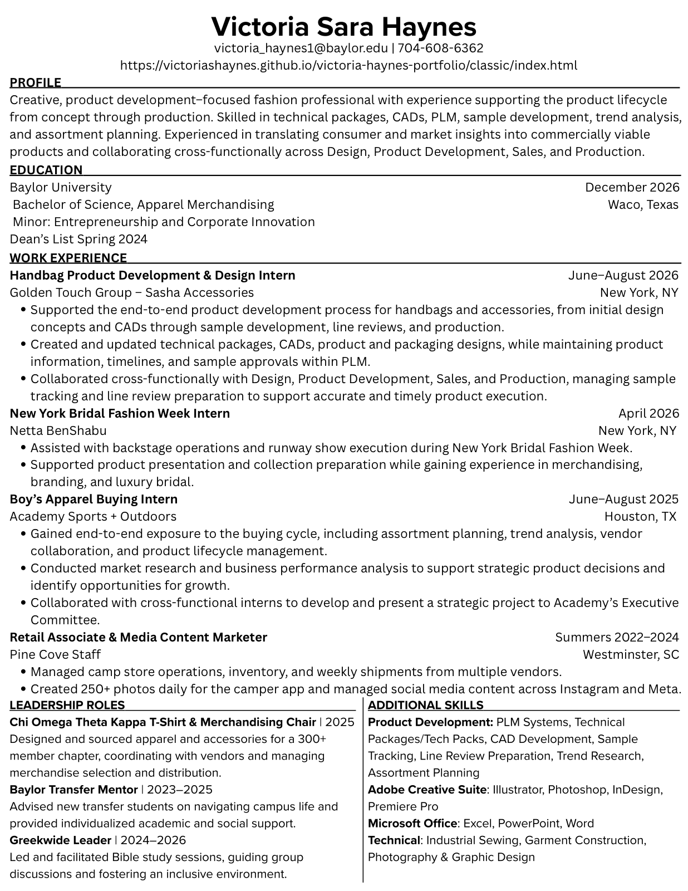

Resume
Creative, product development–focused fashion professional with experience supporting the product lifecycle from concept through production. Baylor University, Apparel Merchandising, December 2026, with a minor in Entrepreneurship and Corporate Innovation.
Download the PDF
Work experience
June to August 2026
Handbag Product Development & Design Intern
Golden Touch Group — Sasha Accessories, New York NY- Supported the end-to-end product development process for handbags and accessories, from initial design concepts and CADs through sample development, line reviews, and production
- Created and updated technical packages, CADs, product and packaging designs, while maintaining product information, timelines, and sample approvals within PLM
- Collaborated cross-functionally with Design, Product Development, Sales, and Production, managing sample tracking and line review preparation to support accurate and timely product execution
April 2026
New York Bridal Fashion Week Intern
Netta BenShabu, New York NY- Assisted with backstage operations and runway show execution during New York Bridal Fashion Week
- Supported product presentation and collection preparation while gaining experience in merchandising, branding, and luxury bridal
June to August 2025
Boy’s Apparel Buying Intern
Academy Sports + Outdoors, Houston TX- Gained end-to-end exposure to the buying cycle, including assortment planning, trend analysis, vendor collaboration, and product lifecycle management
- Conducted market research and business performance analysis to support strategic product decisions and identify opportunities for growth
- Collaborated with cross-functional interns to develop and present a strategic project to Academy’s Executive Committee
Summers 2022 to 2024
Retail Associate & Media Content Marketer
Pine Cove Staff, Westminster SC- Managed camp store operations, inventory, and weekly shipments from multiple vendors
- Created 250+ photos daily for the camper app and managed social media content across Instagram and Meta
Leadership
2025 to present
T-Shirt & Merchandising Chair, Chi Omega Theta Kappa
Baylor University- Designed and sourced apparel and accessories for a 300+ member chapter, coordinating with vendors and managing merchandise selection and distribution
2024 to 2026
Greekwide Leader
Baylor University- Led and facilitated Bible study sessions, guiding group discussions and fostering an inclusive environment
2023 to 2025
Baylor Transfer Mentor
Baylor University- Advised new transfer students on navigating campus life and provided individualized academic and social support
Skills
Product development
- PLM systems
- Technical packages and tech packs
- CAD development
- Sample tracking
- Line review preparation
- Trend research
- Assortment planning
Adobe Creative Suite
- Illustrator
- Photoshop
- InDesign
- Premiere Pro
Microsoft Office
- Excel
- PowerPoint
- Word
Technical
- Industrial sewing
- Garment construction
- Photography and graphic design